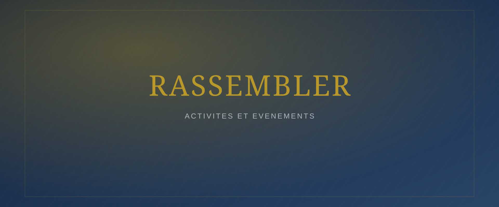
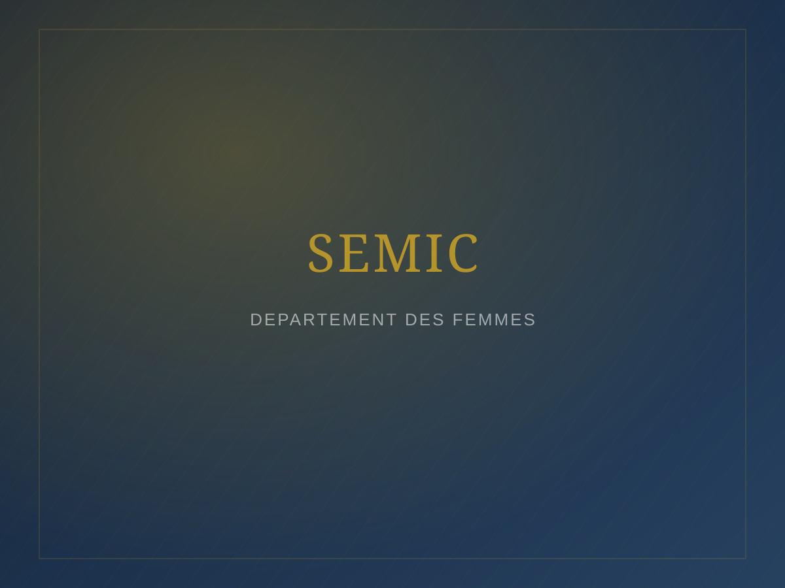
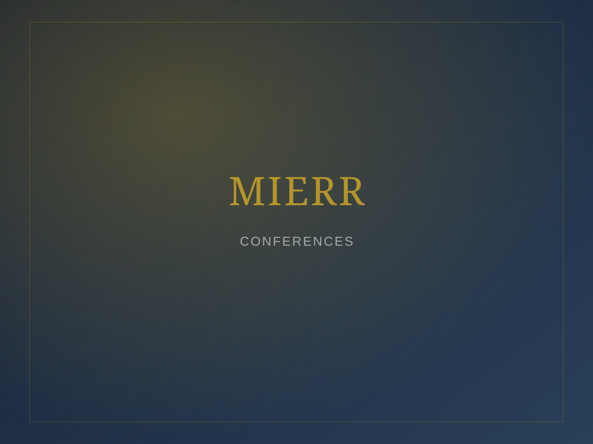
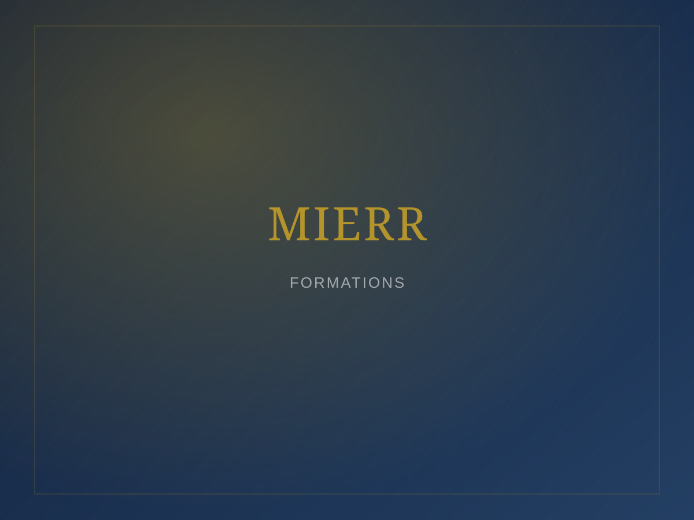

Accueil / Activités et événements
Activités et événements
Les grands rendez-vous annuels qui rythment la vie de la MIERR.
Rendez-vous annuel
Renseignements
Convention annuelle de la MIERR
[Présentation de la vision de la convention annuelle de la MIERR.]
| Thème de l'année | [Thème de l'année à préciser] |
|---|---|
| Dates | [Dates de l'édition à venir] |
| Lieu | [Lieu de la convention] |
| Prédicateurs | [Liste des prédicateurs invités] |

Archives des éditions précédentes
[Les programmes, photos et vidéos des éditions précédentes de la convention seront progressivement archivés ici et dans la galerie.]
SEMIC
Voir le département SEMIC
CO-SEMIC — Conférence Internationale des Servantes Missionnaires de Christ
| Objectif | [Objectif de la conférence à préciser] |
|---|---|
| Thème | [Thème de l'édition à venir] |
| Dates | [Dates de l'édition à venir] |
| Intervenants | [Liste des intervenants invités] |

JEMOC
Voir le département JEMOC
CO-JEMOC — Conférence de la Jeunesse Missionnaire et Ouvriers de Christ
| Objectif | [Objectif de la conférence à préciser] |
|---|---|
| Thème | [Thème de l'édition à venir] |
| Dates | [Dates de l'édition à venir] |
| Intervenants | [Liste des intervenants invités] |

Début d'année
Séminaire « Vision de l'Aigle »
Organisé au début de chaque année pour lancer la MIERR sur les orientations spirituelles de l'année.
| Thème annuel | [Thème de l'édition à venir] |
|---|---|
| Programme | [Programme à préciser] |
| Intervenants | [Liste des intervenants] |

Effusion
Séminaire de Pentecôte
[Présentation de l'événement et de ses différentes éditions.]

Formation
Séminaire sur le discipolat
Objectifs
[Objectifs du séminaire à préciser.]
Programme & enseignements
[Programme et enseignements à préciser.]
Intervenants
[Liste des intervenants.]
Voir l'Institut biblique de Sion
Agenda dynamique
Calendrier des activités
Toutes les dates, horaires, lieux et responsables des prochaines activités de la MIERR.
À activer : ce calendrier affiche des exemples d'entrées. Depuis le futur tableau de bord, l'administrateur pourra ajouter un événement et le modifier directement, sans toucher au code.